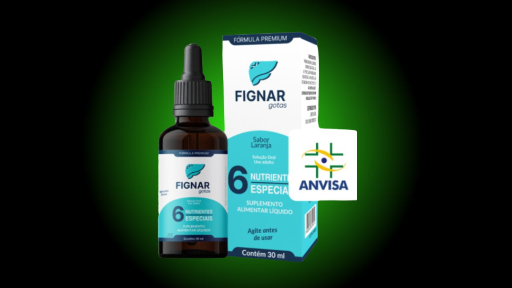

Análise Independente de Suplementos
O que encontramos foi diferente do que esperávamos. Leia antes de desistir ou de comprar.

Quer ver a composição completa antes de decidir?
Acessar Site Oficial do Fignar✓ Garantia de 90 dias · Aprovado ANVISA · Frete grátis
Investigamos as principais críticas ao Fignar e encontramos um padrão claro — não é o produto em si que gera insatisfação, mas a expectativa de resultado imediato para um problema que leva anos para se instalar.
Reclamação frequente em grupos de consumidores.
Presente em avaliações de marketplaces.
Observação recorrente em fóruns.
Comentário em avaliações pós-compra.
Ao filtrar as avaliações por usuários que usaram o produto por 60 dias ou mais, o padrão muda. A maioria relata melhora no nível de energia, redução do inchaço abdominal e resultados positivos em exames de controle.
O dado mais relevante: o fabricante afirma ter uma das maiores taxas de recompra da Braip — o que indica que quem usa por tempo suficiente tende a continuar usando.
A garantia de 90 dias existe exatamente porque o produto precisa de tempo para mostrar resultado. Quem desiste em 2 semanas não está dando o tempo mínimo para a fórmula agir.
As reclamações encontradas têm causas identificáveis e explicáveis. O produto tem programa de garantia ativo e aprovação regulatória. Se você tem preocupação com a saúde do fígado, vale conhecer o produto no site oficial.
Ver Site Oficial com Garantia de 90 Dias✓ Aprovado pela ANVISA · Frete grátis · 90 dias de garantia
Esta página contém links de afiliado. Se você comprar através deles, recebemos uma comissão sem custo adicional para você.
Conteúdo informativo — não substitui orientação médica profissional.